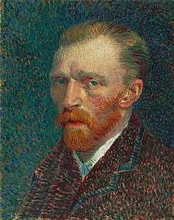

Os livros estimulam a nossa criatividade, facilitam nossa compreensão e aumentam o nosso vocabulário.
O site A Sea of Literary Genres foi criado para os amantes de livros. Tendo como objetivo ajudar novos leitores a decidirem qual gêneros literário é o que mais se adaptam, mas não sabem por onde começar.
Os gêneros literários são categorias de livros que se dividem em diferentes padrões estéticos.
